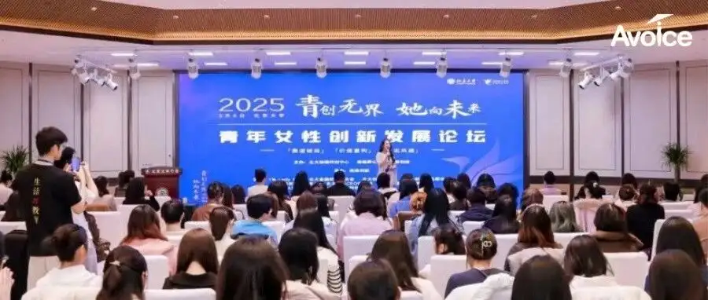
以下文章来源于北大临港科创中心 ，作者燕南创新
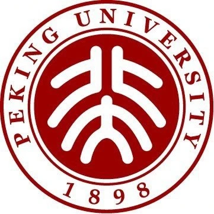
上海临港北京大学国际科技创新中心由北京大学和中国（上海）自由贸易试验区临港新片区共同支持建设，是专注科技创新服务的社会服务机构；中心聚焦生物医药、人工智能、集成电路、新材料、低空经济等产业方向，努力建设成具有国际影响力的一流科技创新平台。


3月8日，2025青年女性创新发展论坛在北京大学正大会议中心盛大启幕，活动由北大临港科创中心、燕缘孵化器、燕缘创投主办，燕南创新承办。本届论坛以“青创无界·她向未来”为主题，聚焦AI技术革命、绿色经济、生命科学等前沿领域，来自科技、商业、学术等领域的十余位优秀女性创业者、行业领袖和260余位观众来宾齐聚一堂，共话女性在创新浪潮中的独特价值与使命担当，共同见证女性在时代舞台上的璀璨瞬间。
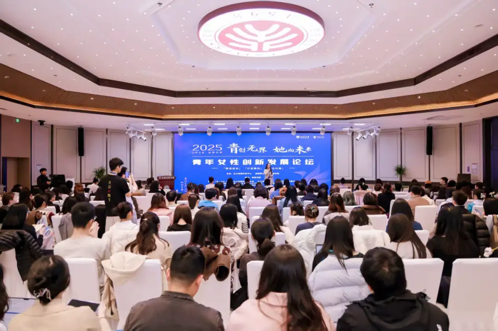
2025青年女性创新发展论坛现场
论坛伊始，北大临港科创中心执行主任、燕缘创投创始合伙人、北京大学校友会副秘书长、北京大学金融校友联合会秘书长王宇代表主办方致辞。他指出，今年是北大的“科技创新”年，希望通过打造燕缘科创生态集合科技创新的要素资源，为北大校友、生态伙伴带来更加坚实与共建共享的资源底座，也鼓励女性创新创业者积极参与创新生态的发展，实现创新从0到1、1到10、10到100的全链条突破。
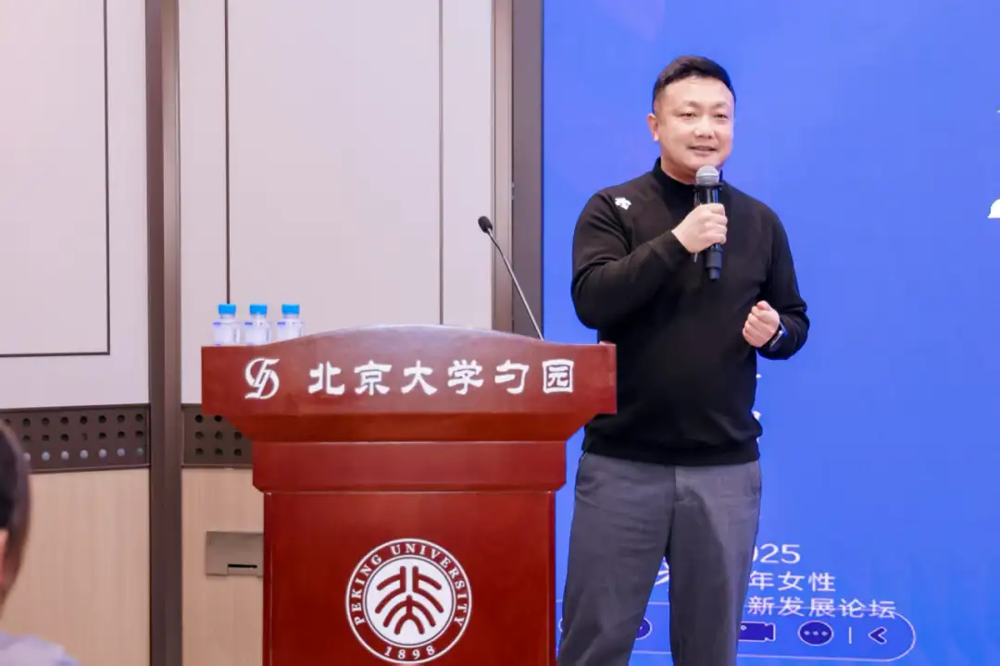
北大临港科创中心执行主任王宇致辞
主旨演讲环节，已来科技董事长、AA 加速集团创始人兼首席顾问、洪泰基金投资合伙人、中国加速器联盟发起人吴玲伟以《AI时代，女性更要向前一步！》为题，分享了AI时代带来的技术平权。她指出，从ChatGPT到DeepSeek，AI正以颠覆性速度重塑生活与工作逻辑，女性需从“使用”起步，善用开源工具与场景化应用，将共情力、智慧、柔韧性和人文关怀转化为创新优势。通过具体案例，吴玲伟展示了女性如何以技术为杠杆撬动商业价值，并强调“技术平权”时代需要女性打破思维壁垒，把AI融进生活和工作。
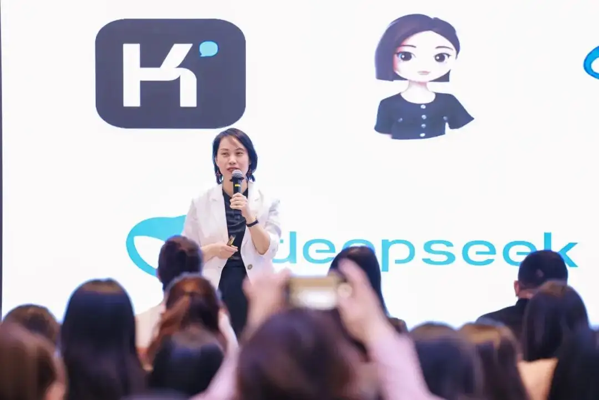
AA 加速集团创始人吴玲伟分享
梅卡曼德（北京）机器人科技有限公司联合创始人、商务与市场副总裁徐婷婷以《打开新世界大门的三把钥匙》为主题，回顾了自己的硬科技创业的之旅。她向现场的观众朋友们分享了“聚焦关键的事情”“人生的容错率比你想象的高的多”“发挥同理心独特优势”三点思考，并呼吁女性创业者“关注人、关注生活”，在奋斗中平衡事业与生命温度，以智慧和韧性打破行业壁垒。
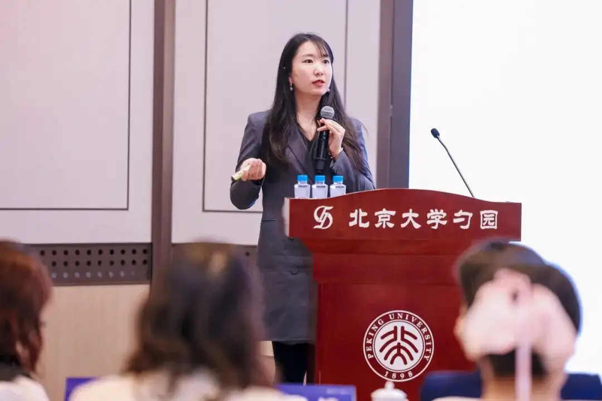
北大校友、梅卡曼德机器人联创徐婷婷分享
在第一场“创新突破中的她力量”主题圆桌中，挚美电商集团董事长林丽君、公司宝联合创始人王静波、索云科技副总裁杨婷、敦煌网集团董事长执行助理&她山国际女性社群中国主理人田梅、南方健康联合创始人龙珑等嘉宾围绕“破界时刻、柔韧之力、生态共建”等话题，共话女性创新突破中的勇气、智慧与无限可能。她们依次分享了职业生涯中最具突破性的瞬间，并探讨了女性如何将特质转化为更大的优势、如何构建更有支撑力的创新生态。
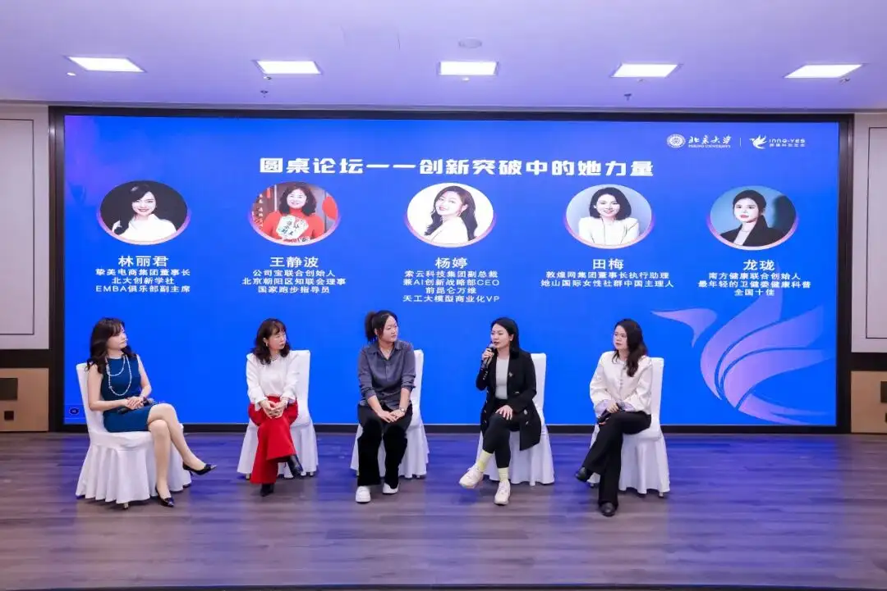
圆桌论坛——创新突破中的她力量
在第二场“创业开拓中的她能量”主题圆桌中，中央广播电视总台记者谢灵慧卉、清创汇智研究院副理事长林惠君、尚汇国际教育集团董事长王田田、GLOW&FLOW新锐珍珠品牌创始人&1% Lady Club女性社群主理人王楠、姜氏古茶联合创始人邬婷等嘉宾，围绕“创业思潮、成长故事、女性消费”等话题，分享了自己成长与创业中的难忘瞬间，同时提出对女性创业者更美好未来的期许，并基于各自领域阐述了对未来3年最具潜力的“她经济”赛道的观点，鼓励女性勇敢做自己、无需被定义。
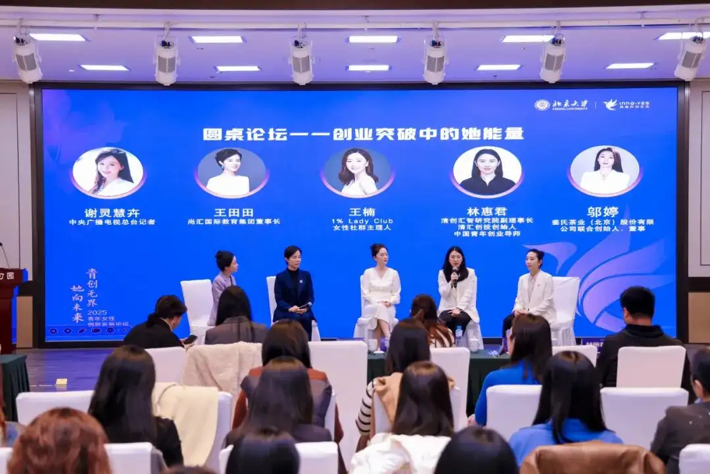
圆桌论坛——创业开拓中的她能量
快闪分享环节，百万畅销书译者、中信出版社年度译者、《我眼中的世界-李飞飞自传》译者赵灿回顾了李飞飞从洗衣店打工到AI领军人物的传奇历程，展现女性如何以坚韧与智慧突破科技边界；河北雄安新区“无废乡村胡各庄村”总策划刘超分享了公益书屋与环保实践，将女性对可持续发展的天然感知力注入乡村振兴，打造循环经济新模式；赛存（北京）生物科技有限公司CEO孙玉玲以赛存为例，讲述生命科学攻坚中“明确短板、深挖痛点、敢啃硬骨头”的破局之道，呼吁女性在技术领域保持长期主义与利他初心。
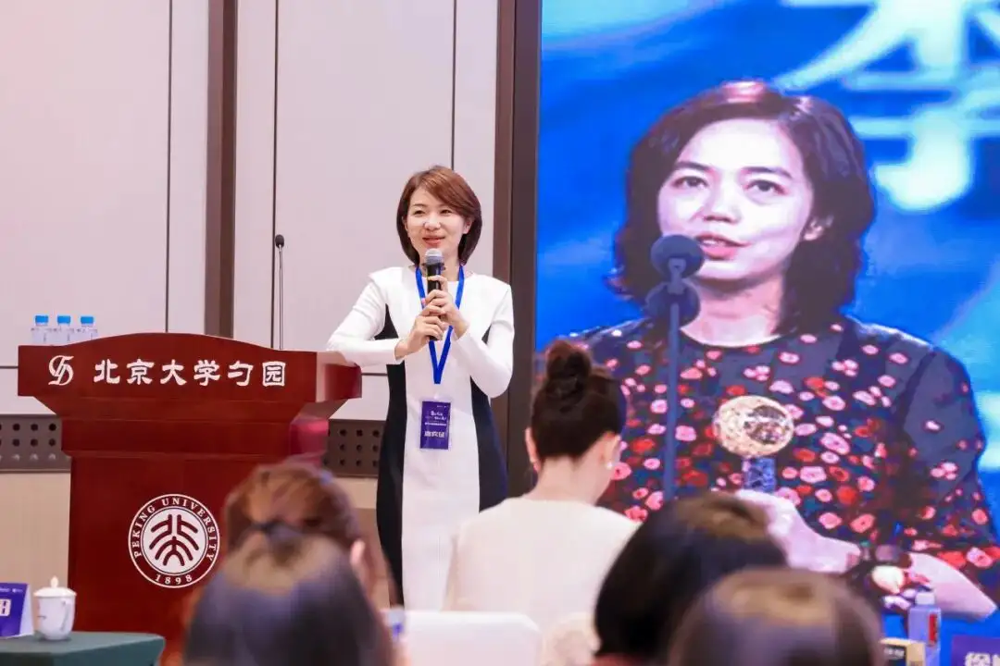
《我眼中的世界-李飞飞自传》中文译者赵灿分享
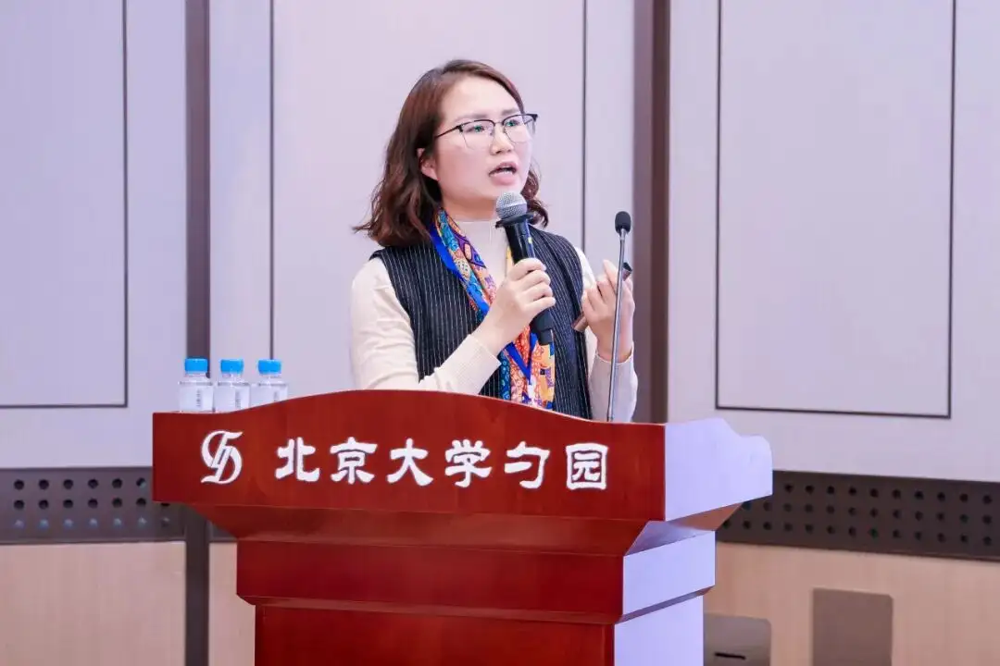
北大校友、河北雄安新区“无废乡村胡各庄村”总策划刘超分享
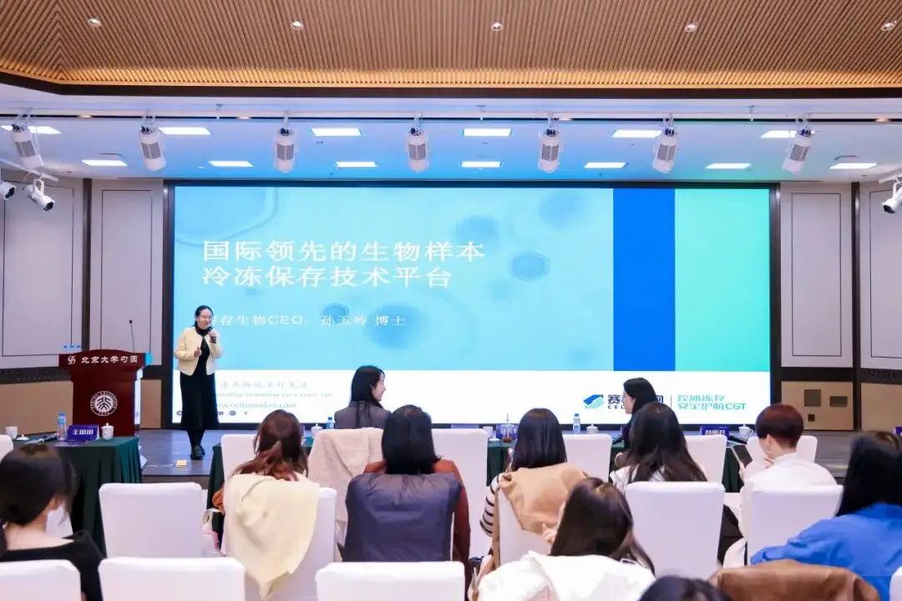
北大校友、赛存生物CEO孙玉玲分享
至此，“青创无界 她向未来”——2025青年女性创新发展论坛”圆满闭幕。这场论坛不仅是一场思想的交流盛宴，更是一次心灵的深度碰撞。每一个观点的分享、每一次思维的交锋，都让我们看到了青年女性在创新道路上的坚定步伐和无限潜力。“青创无界 她向未来”不仅仅是一句口号，更是我们共同的信念和追求，希望所有的女性能继续在创新的道路上砥砺前行，勇于创新，敢于突破，在自己的领域绽放出最耀眼的光芒！
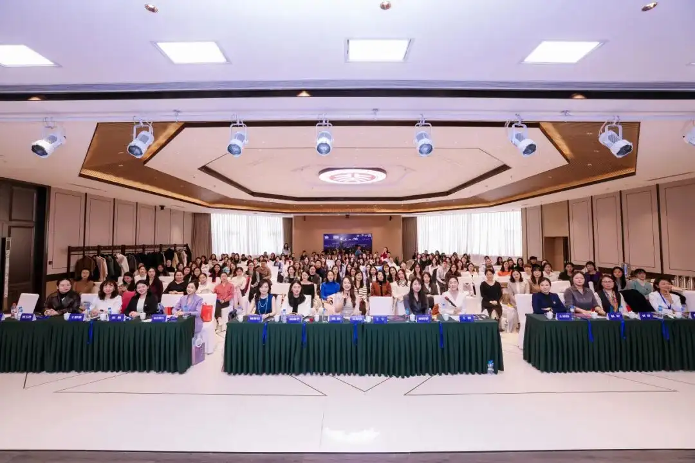
嘉宾及观众合影留念
来源｜燕南创新
编辑｜孙方舟 张楠
责编｜王宇
总编｜姚卫浩
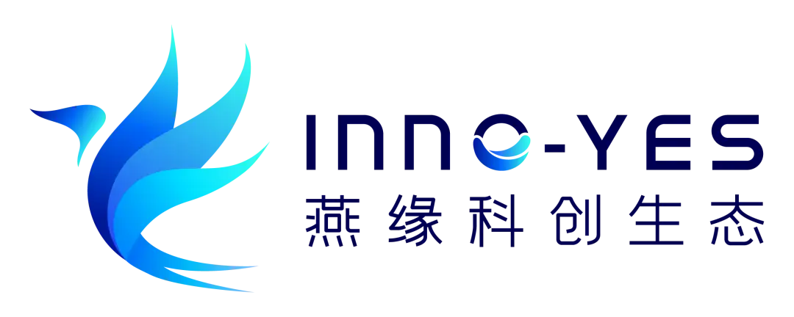
“燕缘科创生态”是系统化、专业化、品牌化、国际化的北大系科创服务平台，由北京大学科技开发部和北京大学校友会共同发起，由北大临港科创中心主责建设，包含燕缘Lab、燕缘孵化器、燕缘创投、燕缘国际科创大赛、燕缘HUB、燕缘科创评论、燕缘会客厅和燕缘公益八个部分。
“燕缘科创生态”立足北大、面向产业、服务全球，旨在全周期、全领域支持科技创新从“0”到“+∞”，搭建全球优质科创资源交流汇聚平台，深度服务以科技成果转化为主的科技创新。
关注中心公众号、视频号，获取更多中心资讯要闻
上海临港北京大学国际科技创新中心
依托北大创新优势和人才资源，聚焦生物医药、人工智能、集成电路、新材料、量子科技五大产业方向，围绕产业链部署创新链、资金链、人才链、服务链、政策链等产出创新成果，通过深度培育与金融支持，推动科技成果转化，孵化高科技企业，努力建设成具有国际影响力的一流科技创新平台，服务临港新片区产业发展，助力上海建设成为具有全球影响力的科技创新高地。
欢迎合作，期待联系
官网：http://iicsh.pku.edu.cn
微博｜领英｜Facebook：北大临港科创中心